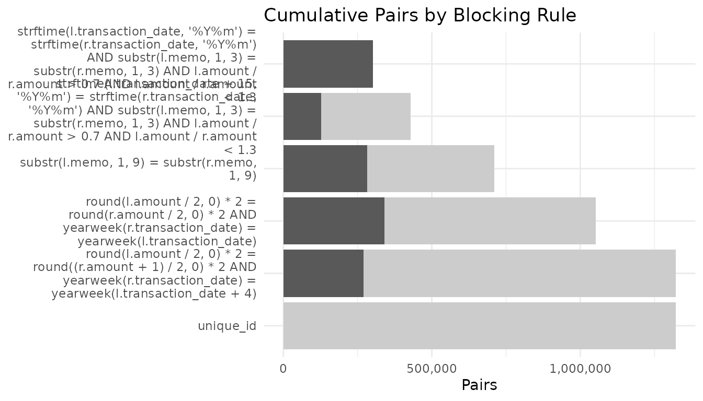
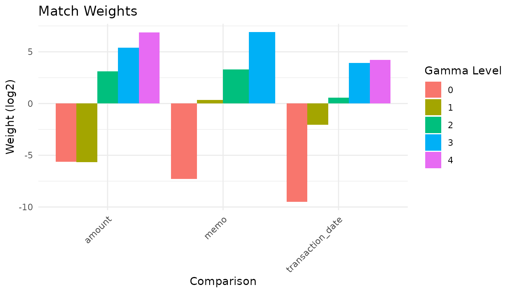
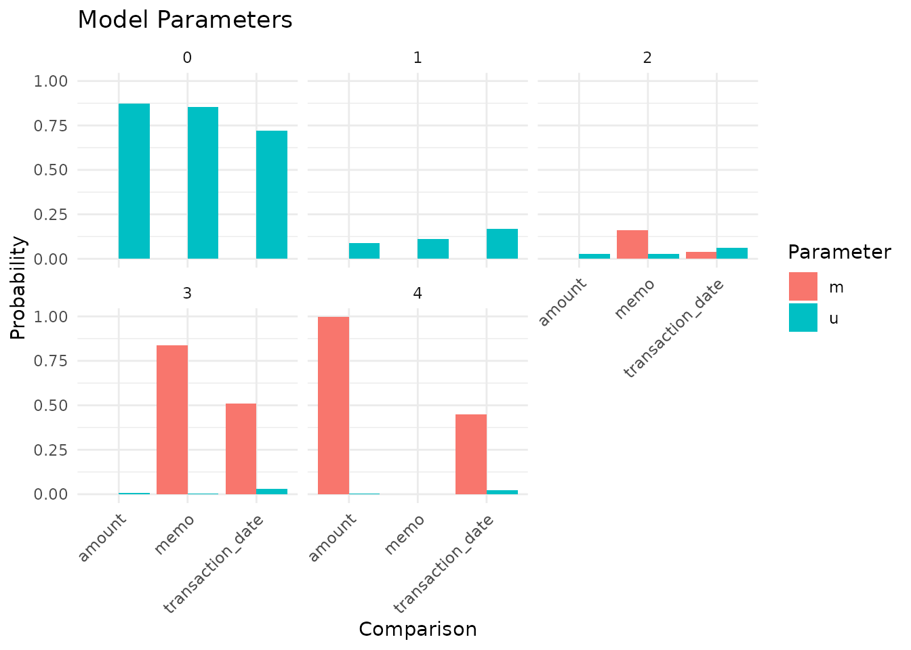
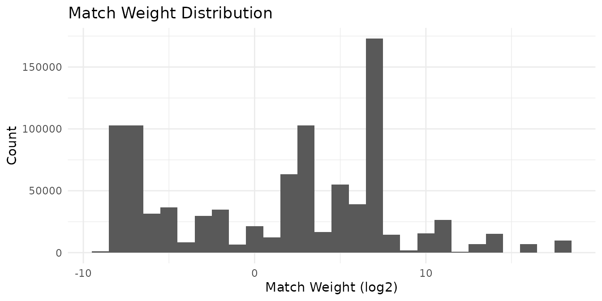
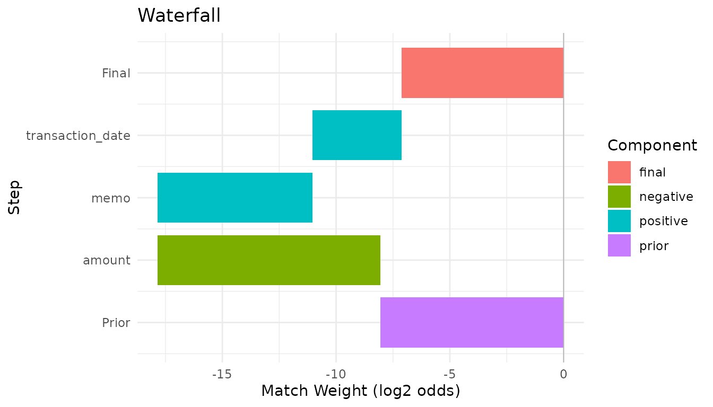
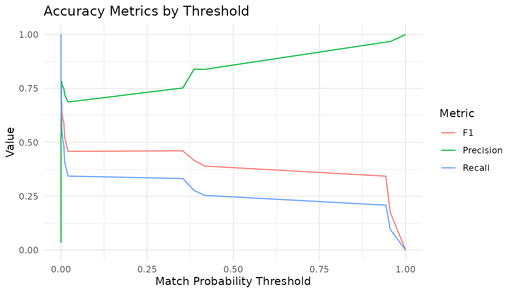

Linking Banking Transactions
transactions.RmdThis vignette replicates the Splink
“Linking banking transactions” demo using irelink. It
demonstrates two-table linking (link_type = "link"),
matching each outgoing payment in the origin table to its corresponding
incoming payment in the destination table.
The data is synthetic and designed to be challenging: amounts differ
due to fees and exchange-rate effects, dates shift by a few days, and
memos are sometimes truncated. Since every origin payment has exactly
one destination counterpart, the prior match probability is
1 / n_origin.
This vignette requires the nanoparquet package to read the remote Parquet files and will only compile when the package and data URLs are both available.
Load the data
library(irelink)
#>
#> Attaching package: 'irelink'
#> The following object is masked from 'package:base':
#>
#> months
library(ggplot2)
df_origin
#> # A data frame: 45,326 × 5
#> ground_truth memo transaction_date amount unique_id
#> <dbl> <chr> <date> <dbl> <dbl>
#> 1 0 MATTHIAS C paym 2022-03-28 36.4 0
#> 2 1 M CORVINUS dona 2022-02-14 222. 1
#> 3 2 M C donation BG 2022-05-04 450. 2
#> 4 3 M C BGC 2022-03-03 208. 3
#> 5 4 M CORVINUS CSH 2022-02-04 79.7 4
#> 6 5 M C WRE 2022-03-26 835. 5
#> 7 6 M CORVINUS CSH 2022-05-01 66.7 6
#> 8 7 M C 1b097ab5 CH 2022-03-15 26246. 7
#> 9 8 M C WRE 2022-03-26 92.8 8
#> 10 9 M C payment CHQ 2022-05-04 211. 9
#> # ℹ 45,316 more rows
df_destination
#> # A data frame: 45,326 × 5
#> ground_truth memo transaction_date amount unique_id
#> <dbl> <chr> <date> <dbl> <dbl>
#> 1 0 "MATTHIAS C payment BGC" 2022-03-29 36.4 0
#> 2 1 "M CORVINUS BGC" 2022-02-16 222. 1
#> 3 2 "M C" 2022-05-05 450. 2
#> 4 3 "M C payment" 2022-03-04 199. 3
#> 5 4 "M CORVINUS " 2022-02-05 79.7 4
#> 6 5 "M C " 2022-03-27 835. 5
#> 7 6 "M CORVINUS dona" 2022-05-05 66.7 6
#> 8 7 "M C CHQ" 2022-03-27 25908. 7
#> 9 8 "M C WRE" 2022-03-27 91.9 8
#> 10 9 "M C payment CHQ" 2022-05-17 212. 9
#> # ℹ 45,316 more rowsProfile the data
il_profile(df_origin, memo, transaction_date, amount, con = con, top_n = 8)
#> # A tibble: 24 × 3
#> column value n
#> <chr> <chr> <dbl>
#> 1 memo J B payment BGC 27
#> 2 memo J B donation BG 25
#> 3 memo J B money BGC 24
#> 4 memo J B BGC 21
#> 5 memo J S money BGC 18
#> 6 memo J P BGC 18
#> 7 memo A B money BGC 18
#> 8 memo A M donation BG 17
#> 9 transaction_date 19122 696
#> 10 transaction_date 19119 693
#> # ℹ 14 more rowsChoose blocking rules
Because corresponding records differ systematically — amounts change
due to fees, dates shift, memos are truncated — blocking rules must be
generous enough to capture true matches while still reducing the pair
space dramatically. The rules below use SQL expressions via
.where:
counts <- il_count_pairs(
df_origin,
df_destination,
# Same year-month, similar memo prefix, amount ratio within 30%
block_on(
.where = paste(
"strftime(l.transaction_date, '%Y%m') = strftime(r.transaction_date, '%Y%m')",
'AND substr(l.memo, 1, 3) = substr(r.memo, 1, 3)',
'AND l.amount / r.amount > 0.7 AND l.amount / r.amount < 1.3'
)
),
# Same but offset by 15 days to catch month boundaries
block_on(
.where = paste(
"strftime(l.transaction_date + 15, '%Y%m') = strftime(r.transaction_date, '%Y%m')",
'AND substr(l.memo, 1, 3) = substr(r.memo, 1, 3)',
'AND l.amount / r.amount > 0.7 AND l.amount / r.amount < 1.3'
)
),
# Memo prefix (first 9 characters)
block_on(.where = 'substr(l.memo, 1, 9) = substr(r.memo, 1, 9)'),
# Rounded amount + same week
block_on(
.where = paste(
'round(l.amount / 2, 0) * 2 = round(r.amount / 2, 0) * 2',
'AND yearweek(r.transaction_date) = yearweek(l.transaction_date)'
)
),
# Amount offset + week offset
block_on(
.where = paste(
'round(l.amount / 2, 0) * 2 = round((r.amount + 1) / 2, 0) * 2',
'AND yearweek(r.transaction_date) = yearweek(l.transaction_date + 4)'
)
),
# Ground-truth "cheat" rule for completeness
block_on(unique_id),
con = con,
link_type = 'link'
)
counts
#> # A tibble: 6 × 4
#> rule n_pairs cumulative_pairs pct_of_cartesian
#> <chr> <dbl> <dbl> <dbl>
#> 1 strftime(l.transaction_date, '%Y%m'… 301614 301614 0.0147
#> 2 strftime(l.transaction_date + 15, '… 281675 428250 0.0208
#> 3 substr(l.memo, 1, 9) = substr(r.mem… 330510 710190 0.0346
#> 4 round(l.amount / 2, 0) * 2 = round(… 353563 1051372 0.0512
#> 5 round(l.amount / 2, 0) * 2 = round(… 352877 1321538 0.0643
#> 6 unique_id 45326 1321565 0.0643
autoplot(counts)
Define the specification
The transaction_date comparison is one-sided: payments
can only arrive after they are sent, so the comparison
checks destination_date - origin_date is between 0 and
N days:
spec <- il_spec() |>
il_compare(amount, cl_pct_diff(0.01, 0.03, 0.10, 0.30)) |>
il_compare(memo, cl_levenshtein(2, 6, 10)) |>
il_compare(
transaction_date,
cl_levels(
cl_null(),
cl_custom('(r.{col} - l.{col}) BETWEEN 0 AND 1'),
cl_custom('(r.{col} - l.{col}) BETWEEN 0 AND 4'),
cl_custom('(r.{col} - l.{col}) BETWEEN 0 AND 10'),
cl_custom('(r.{col} - l.{col}) BETWEEN 0 AND 30'),
cl_else()
)
) |>
il_block_on(
.where = paste(
"strftime(l.transaction_date, '%Y%m') = strftime(r.transaction_date, '%Y%m')",
'AND substr(l.memo, 1, 3) = substr(r.memo, 1, 3)',
'AND l.amount / r.amount > 0.7 AND l.amount / r.amount < 1.3'
)
) |>
il_block_on(
.where = paste(
"strftime(l.transaction_date + 15, '%Y%m') = strftime(r.transaction_date, '%Y%m')",
'AND substr(l.memo, 1, 3) = substr(r.memo, 1, 3)',
'AND l.amount / r.amount > 0.7 AND l.amount / r.amount < 1.3'
)
) |>
il_block_on(.where = 'substr(l.memo, 1, 9) = substr(r.memo, 1, 9)') |>
il_block_on(
.where = paste(
'round(l.amount / 2, 0) * 2 = round(r.amount / 2, 0) * 2',
'AND yearweek(r.transaction_date) = yearweek(l.transaction_date)'
)
) |>
il_block_on(
.where = paste(
'round(l.amount / 2, 0) * 2 = round((r.amount + 1) / 2, 0) * 2',
'AND yearweek(r.transaction_date) = yearweek(l.transaction_date + 4)'
)
) |>
il_block_on(unique_id)
spec
#> Linkage Specification
#> Comparisons (3):
#> amount : pct_diff
#> memo : levenshtein
#> transaction_date : levels
#> Blocking rules (6, OR-ed):
#> 1. WHERE strftime(l.transaction_date, '%Y%m') = strftime(r.transaction_date, '%Y%m') AND substr(l.memo, 1, 3) = substr(r.memo, 1, 3) AND l.amount / r.amount > 0.7 AND l.amount / r.amount < 1.3
#> 2. WHERE strftime(l.transaction_date + 15, '%Y%m') = strftime(r.transaction_date, '%Y%m') AND substr(l.memo, 1, 3) = substr(r.memo, 1, 3) AND l.amount / r.amount > 0.7 AND l.amount / r.amount < 1.3
#> 3. WHERE substr(l.memo, 1, 9) = substr(r.memo, 1, 9)
#> 4. WHERE round(l.amount / 2, 0) * 2 = round(r.amount / 2, 0) * 2 AND yearweek(r.transaction_date) = yearweek(l.transaction_date)
#> 5. WHERE round(l.amount / 2, 0) * 2 = round((r.amount + 1) / 2, 0) * 2 AND yearweek(r.transaction_date) = yearweek(l.transaction_date + 4)
#> 6. unique_idTrain the model
model <- il_model(
df_origin,
df_destination,
spec = spec,
con = con,
link_type = 'link'
)
model$params$prior <- 1 / nrow(df_origin)
model <- il_estimate_u(model, max_pairs = 1e6) |>
il_estimate_em(block_on(memo)) |>
il_estimate_em(block_on(amount))Inspect the trained model
summary(model)
#> irelink Model
#> Status: Trained
#> Link type: link
#> Records: 45326
#> Records (right): 45326
#> Comparisons: 3
#> Blocking rules: 6
#>
#> Parameters:
#> prior: 2.206239e-05
#> comparisons: # A tibble: 14 × 4
#> comparisons: comparison gamma_level m u
#> comparisons: <chr> <int> <dbl> <dbl>
#> comparisons: 1 amount 0 0.000996 0.875
#> comparisons: 2 amount 1 0.000996 0.0873
#> comparisons: 3 amount 2 0.000996 0.0266
#> comparisons: 4 amount 3 0.000996 0.00743
#> comparisons: 5 amount 4 0.996 0.00376
#> comparisons: 6 memo 0 0.000998 0.856
#> comparisons: 7 memo 1 0.000998 0.111
#> comparisons: 8 memo 2 0.160 0.0279
#> comparisons: 9 memo 3 0.838 0.00486
#> comparisons: 10 transaction_date 0 0.000998 0.719
#> comparisons: 11 transaction_date 1 0.000998 0.168
#> comparisons: 12 transaction_date 2 0.0374 0.0600
#> comparisons: 13 transaction_date 3 0.511 0.0313
#> comparisons: 14 transaction_date 4 0.449 0.0211
autoplot(model)
autoplot(model, type = 'parameters')
Predict
predictions <- predict(model, threshold = 0.001)
predictions
#> # A tibble: 44,506 × 7
#> unique_id_l unique_id_r match_weight match_probability gamma_amount
#> * <dbl> <dbl> <dbl> <dbl> <int>
#> 1 15 15 19.5 0.943 4
#> 2 33 33 8.56 0.00826 3
#> 3 36 36 8.95 0.0108 3
#> 4 38 38 19.5 0.943 4
#> 5 45 45 8.95 0.0108 3
#> 6 48 48 14.6 0.354 4
#> 7 74 74 6.72 0.00232 2
#> 8 91 91 15.0 0.417 4
#> 9 97 97 8.56 0.00826 3
#> 10 101 101 15.0 0.417 4
#> # ℹ 44,496 more rows
#> # ℹ 2 more variables: gamma_memo <int>, gamma_transaction_date <int>
autoplot(predictions)
autoplot(predictions, which = 1)
Evaluate against ground truth
acc <- il_accuracy(model, labels_col = 'ground_truth')
acc
#> # A tibble: 101 × 8
#> threshold tp fp fn tn precision recall f1
#> <dbl> <int> <int> <int> <int> <dbl> <dbl> <dbl>
#> 1 4.07e-14 45326 1276239 0 0 0.0343 1 0.0663
#> 2 1.74e-13 45326 1249202 0 27037 0.0350 1 0.0677
#> 3 3.12e-13 45326 1243355 0 32884 0.0352 1 0.0680
#> 4 4.07e-13 45326 1228669 0 47570 0.0356 1 0.0687
#> 5 1.33e-12 45326 1186806 0 89433 0.0368 1 0.0710
#> 6 1.34e-12 45326 1183585 0 92654 0.0369 1 0.0711
#> 7 1.74e-12 45326 1161445 0 114794 0.0376 1 0.0724
#> 8 3.13e-12 45326 1125669 0 150570 0.0387 1 0.0745
#> 9 4.79e-12 45326 1080984 0 195255 0.0402 1 0.0774
#> 10 5.72e-12 45326 1042321 0 233918 0.0417 1 0.0800
#> # ℹ 91 more rows
autoplot(acc)
Error inspection
errors <- il_errors(model, labels_col = 'ground_truth', threshold = 0.5)
errors[errors$error_type == 'false_positive', ]
#> # A tibble: 345 × 6
#> unique_id_l unique_id_r match_weight match_probability true_label error_type
#> <dbl> <dbl> <dbl> <dbl> <lgl> <chr>
#> 1 20843 15459 19.9 0.956 FALSE false_posi…
#> 2 20858 27390 19.5 0.943 FALSE false_posi…
#> 3 20908 2691 19.5 0.943 FALSE false_posi…
#> 4 21069 18603 19.5 0.943 FALSE false_posi…
#> 5 21633 815 19.9 0.956 FALSE false_posi…
#> 6 23351 41754 19.9 0.956 FALSE false_posi…
#> 7 24552 18926 19.5 0.943 FALSE false_posi…
#> 8 24863 18827 19.9 0.956 FALSE false_posi…
#> 9 25741 32509 19.9 0.956 FALSE false_posi…
#> 10 27796 45053 19.5 0.943 FALSE false_posi…
#> # ℹ 335 more rows
errors[errors$error_type == 'false_negative', ]
#> # A tibble: 35,871 × 6
#> unique_id_l unique_id_r match_weight match_probability true_label error_type
#> <dbl> <dbl> <dbl> <dbl> <lgl> <chr>
#> 1 22 22 2.19 0.000101 TRUE false_nega…
#> 2 26 26 8.95 0.0108 TRUE false_nega…
#> 3 39 39 6.72 0.00232 TRUE false_nega…
#> 4 69 69 4.03 0.000361 TRUE false_nega…
#> 5 114 114 8.95 0.0108 TRUE false_nega…
#> 6 125 125 15.0 0.417 TRUE false_nega…
#> 7 163 163 14.6 0.354 TRUE false_nega…
#> 8 179 179 9.89 0.0205 TRUE false_nega…
#> 9 185 185 6.72 0.00232 TRUE false_nega…
#> 10 190 190 8.95 0.0108 TRUE false_nega…
#> # ℹ 35,861 more rowsCleanup
il_cleanup(model)
DBI::dbDisconnect(con, shutdown = TRUE)